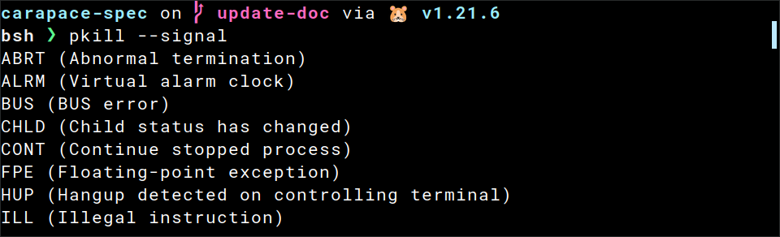
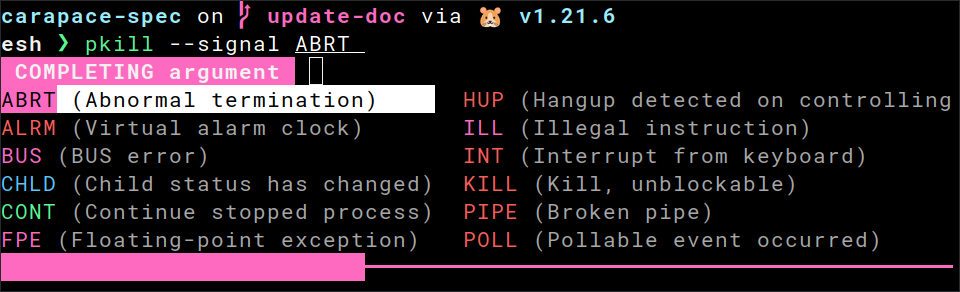
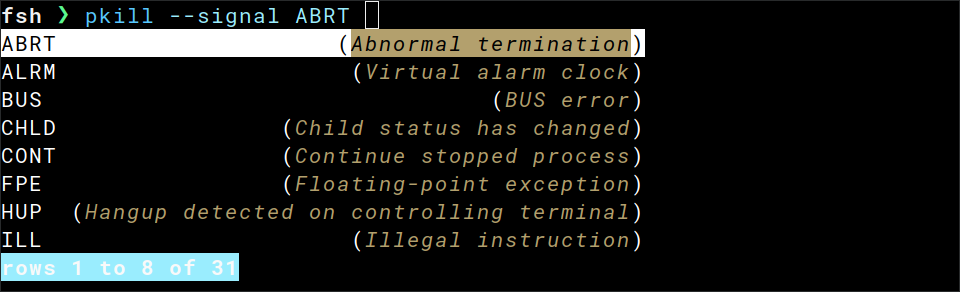
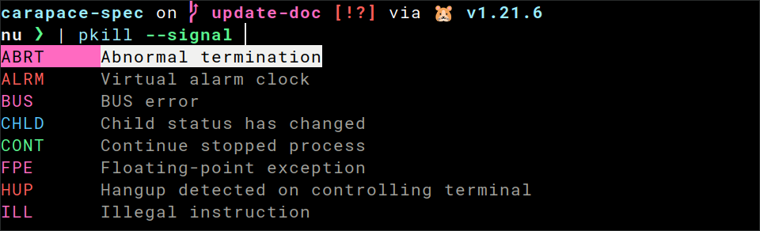
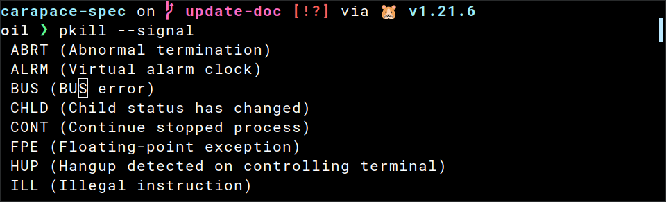
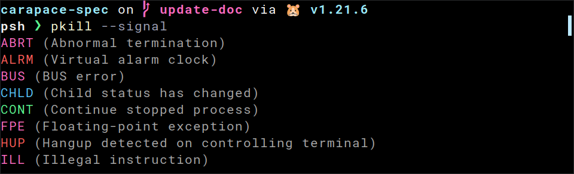
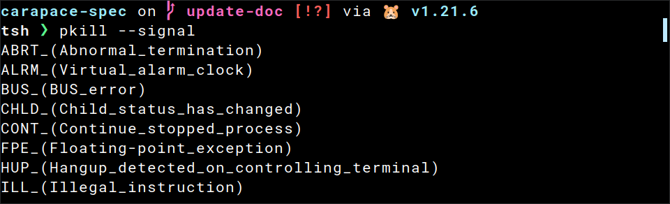
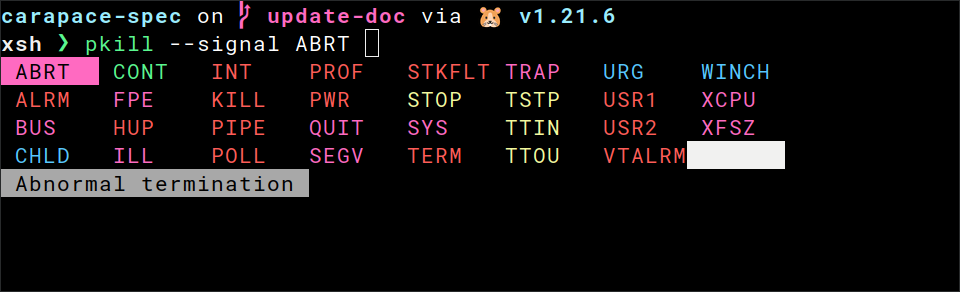
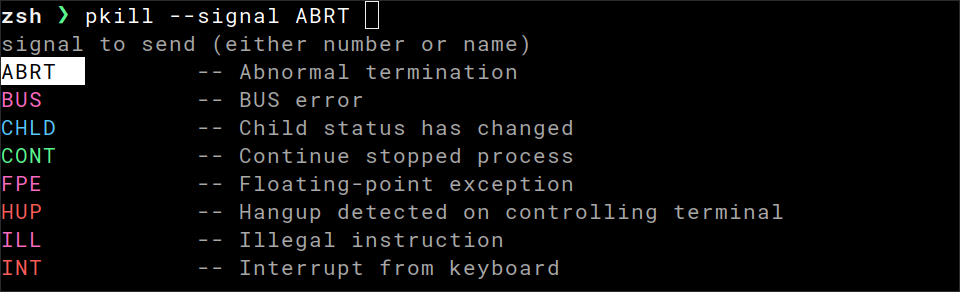

carapace-spec
Define simple completions using a spec file (based on carapace).
name: mycmd
description: my command
flags:
--optarg?: optarg flag
-r, --repeatable*: repeatable flag
-v=: flag with value
persistentflags:
--help: bool flag
completion:
flag:
optarg: ["one", "two\twith description", "three\twith style\tblue"]
v: ["$files"]
commands:
- name: sub
description: subcommand
completion:
positional:
- ["$list(,)", "1", "2", "3"]
- ["$directories"]
Usage
Bash
# ~/.bashrc
source <(carapace-spec example/pkill.yaml)

Elvish
# ~/.config/elvish/rc.elv
eval (carapace-spec example/pkill.yaml|slurp)

Fish
# ~/.config/fish/config.fish
carapace-spec example/pkill.yaml | source

Nushell
update config.nu according to Multiple Completer)
#~/.config/nushell/config.nu
carapace-spec example/pkill.yaml

Oil
# ~/.config/oil/oshrc
source <(carapace-spec example/pkill.yaml)

Powershell
# ~/.config/powershell/Microsoft.PowerShell_profile.ps1
carapace-spec example/pkill.yaml | Out-String | Invoke-Expression

Tcsh
## ~/.tcshrc
eval `carapace-spec example/pkill.yaml`

Xonsh
# ~/.config/xonsh/rc.xsh
exec($(carapace-spec example/pkill.yaml))

Zsh
# ~/.zshrc
source <(carapace-spec example/pkill.yaml)

Command
type Command struct {
Name string
Aliases []string
Description string
Group string
Hidden bool
Parsing string
Flags map[string]string
PersistentFlags map[string]string
ExclusiveFlags [][]string
Run string
Completion struct {
Flag map[string][]string
Positional [][]string
PositionalAny []string
Dash [][]string
DashAny []string
}
Commands []Command
}
Name
Name of the command.
name: add
It can also contain the one-line usage message.
name: add [-F file | -D dir]... [-f format] profile
Recommended syntax is as follows:
[ ]identifies an optional argument. Arguments that are not enclosed in brackets are required....indicates that you can specify multiple values for the previous argument.|indicates mutually exclusive information. You can use the argument to the left of the separator or the argument to the right of the separator. You cannot use both arguments in a single use of the command.{ }delimits a set of mutually exclusive arguments when one of the arguments is required. If the arguments are optional, they are enclosed in brackets ([ ]).
Aliases
Aliases of the command.
aliases: [l, ls]
Description
Description of the command.
description: example description
Group
Group of the command.
group: core
Hidden
Whether to hide the command during subcommand completion.
hidden: true
Parsing
Sets flag parsing mode. One of:
interspersedmixed flags and positional argumentsnon-interspersedflag parsing stopped after first positional argumentdisabledflag parsing disabled
# yaml-language-server: $schema=https://carapace.sh/schemas/command.json
name: parsing
persistentflags:
-h, --help: show help
commands:
- name: disabled
parsing: disabled
completion:
positionalany: [one, two, three]
- name: interspersed
parsing: interspersed
completion:
positionalany: [one, two, three]
- name: non-interspersed
parsing: non-interspersed
completion:
positionalany: [one, two, three]
Flags
Flags are defined as a map of name and description.
flags:
-b: bool flag
-v=: shorthand with value
--repeatable*: longhand repeatable
-o, --optarg?: shorthand and longhand with optional argument
--hidden&: longhand hidden
--required!: longhand required
Modifiers:
=flag takes an argument*flag is repeatable?flag takes an optional argument&flag is hidden!flag is required
Non-posix
With carapace-pflag non-posix flags possible as well:
-np: non-posix shorthand
-np, -nonposix: non-posix shorthand and longhand
-np, --nonposix: non-posix shorthand mixed with posix longhand
PersistentFlags
Same as Flags, but passes them down to subcommands.
ExclusiveFlags
Mark flags mutually exclusive.
# yaml-language-server: $schema=https://carapace.sh/schemas/command.json
name: exclusiveflags
flags:
--add: add package
--delete: delete package
exclusiveflags:
- [add, delete]
Run
Completion
Completion for a position is defined by an array of static Values and Macros.
Flag
Define flag completion.
# yaml-language-server: $schema=https://carapace.sh/schemas/command.json
name: flag
flags:
-e=: executables
-f, --file=: file
completion:
flag:
e: ["$executables"]
file: ["$files"]
Positional
Define positional completion.
# yaml-language-server: $schema=https://carapace.sh/schemas/command.json
name: positional
completion:
positional:
- [pos1, positional1]
- [pos2, positional2]
PositionalAny
Define positional any completion.
# yaml-language-server: $schema=https://carapace.sh/schemas/command.json
name: positionalany
completion:
positionalany: [one, two, three]
Dash
Define dash completion.
# yaml-language-server: $schema=https://carapace.sh/schemas/command.json
name: dash
completion:
dash:
- [d1, dash1]
- [d2, dash2]
DashAny
Define dash any completion.
# yaml-language-server: $schema=https://carapace.sh/schemas/command.json
name: dashany
completion:
dashany: [one, two, three]
Commands
Values
Values are defined with an optional description and optional style delimited by \t.
["value", "value\tdescription", "value\tdescription\tblue"]
Macros
Macros are basically Actions exposed to the spec (E.g. $files([.go, go.mod]).
The brackets are optional if no argument is passed (so
$filesis equivalent to$files()).
Core
Core macros provided by carapace-spec.
directories
$directories completes directories.
["$directories"]
exec
$(<command>) executes given command in a sh / pwsh shell.
["$(echo -e 'a\nb\nc')"]
executables
$executables completes PATH executables.
["$executables"]
files
$files([<suffixes>]) completes files with an optional list of suffixes to filter on.
["$files([.go, go.mod, go.sum])"]
message
$message(<message>) adds given error message to completion.
["$message(some error)"]
spec
$spec(<file>) completes arguments using the given spec file.
This implicitly disables flag parsing for the corresponding (sub)command.
["$spec(example.yaml)"]
Modifier
Modifiers change the completion of macros and values. These can be set
- generic
["<macro>", "<value>", "<modifier>"] - specific
["<macro> ||| <modifier> ||| <modifier>"].
The delimiter (
|||) is currently very strict and not trimmed.
chdir
$chdir(<directory>) changes the directory.
["$files", "$chdir(/tmp)"]
The following macros can be passed as well instead of a static directory:
$gitdir.git folder$gitworktreeroot of the working directory for a non-bare repository$parent(\[file, dir\])first parent directory containing any of the given names/directories$tempdirdefault directory to use for temporary files$usercachedirroot directory to use for user-specific cached data$userconfigdirdefault root directory to use for user-specific configuration data$userhomedircurrent user's home directory$xdgcachehomecache directory (fallback to UserCacheDir)$xdgconfighomehome directory (fallback to UserConfigDir)
["$files", "$chdir($gitdir)"]
filter
$filter([<value>]) filters given values.
["one", "two", "three", "$filter([two])"]
filterargs
$filterargs filters Context.Args.
["$files", "$filterargs"]
list
$list(<delimiter>) creates a list with given divider.
["one", "two", "three", "$list(,)"]
multiparts
$multiparts([<delimiter>]) completes values splitted by given delimiter(s) separately.
["one/two/three", "$multiparts([/])"]
nospace
$nospace(<characters>) disables space suffix for given character(s).
["one", "two/", "three,", "$nospace(/,)"]
prefix
$pefix(<prefix>) adds a prefix to the inserted values.
["$files", "$prefix(file://)"]
retain
$retain([<value>]) retains given values.
["one", "two", "three", "$retain([two])"]
shift
$shift(<n>) shifts positional arguments left n times.
["one", "two", "three", "$filterargs", "$shift(1)"]
split
$split splits Context.Value lexicographically and replaces Context.Args with the tokens.
["one", "two", "three", "$filterargs", "$split"]
splitp
$splitp is like Split but supports pipelines.
["one", "two", "three", "$filterargs", "$splitp"]
suffix
$suffix(<suffix>) adds a suffix to the inserted values.
["apple", "melon", "orange", "$suffix(juice)"]
suppress
$suppress(<regex>) suppresses specific error messages using a regular expression.
["$message(fail)", "$suppress(fail)"]
style
$style(<style>) sets the style for all values.
["one", "two", "three", "$style(underlined)"]
tag
$tag(<tag>) sets the tag for all values.
["one", "two", "three", "$tag(numbers)"]
uniquelist
$uniquelist(<delimiter>) creates a unique list with given divider.
["one", "two", "three", "$uniquelist(,)"]
usage
$usage(<usage>) sets the usage message.
["$usage(custom)"]
Custom
Custom macros can be added with AddMacro.
// `$_noarg` without argument
AddMacro("noarg", MacroN(func() carapace.Action { return carapace.ActionValues()}))
// `$_arg({name: example, enabled: true})` with argument (primitive or struct)
AddMacro("arg", MacroI(func(u User) carapace.Action { return carapace.ActionValues()}))
// `$_vararg([another, example])` with variable arguments (primitive or struct)
AddMacro("vararg", MacroV(func(s ...string) carapace.Action { return carapace.ActionValues()}))
Arguments are parsed as
yamlso only struct keys deviating from the default need to be set.
Default (experimental)
A Default() method can be added to a struct passed to MacroI.
It will be called when the macro is used without argumeng ($_arg instead of $_arg({user: example})).
type User struct {
Name string
Enabled bool
}
func (u User) Default() User {
u.Name = "example"
u.Enabled = true
return u
}
Variables
Variables are replaced using drone/envsubst.
${C_ARG<position>}positional arguments [0..n]${C_FLAG_<flagname>}flag values (if modified)${C_PART<position>}parts of the current word during multipart completion [0..n]${C_VALUE}the word currently being completed
name: myvar
flags:
--suffix=: file suffixes
completion:
flag:
suffix: ["$list(,)", ".go", "go.sum", "go.mod", ".md", "LICENSE"]
positional:
- ["$files([${C_FLAG_SUFFIX//,/, }])"] # replace `,` with `, ` for valid array syntax
- ["${C_FLAG_SUFFIX:-default}", "${C_ARG0}"] # use default if flag is not set